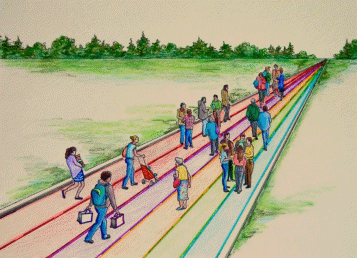

About
education
About
education
An education framework
Occasional Paper No. 9 September 5, 2018

The road of life
The nature and availability of a quality education will, in large measure, determine the future of individual Canadians, Canadian communities and Canada itself; in view of its importance and given the concern about the state of public education, some thoughts on a framework for making educational decisions may be in order. The Road of Life is one such framework; it starts with the view that one’s education is preparation for the next stage on the road of life. Having a framework for learning increases the chances of making relevant decisions and making those decisions more consistently. It also provides common language and perspectives when collaborating with colleagues in the field.
LEARNERS
A learner, is a person who, for whatever reason, is trying to bring about change in his/her life, trying to change an attitude, gain new knowledge or add skills. But learners are neither empty jars nor blank slates; to each new learning situation, a learner brings:
• Certain physical, mental and emotional conditions with which they were born.
• Prior learning experiences resulting from having lived, formal study, home circumstances, travel, state of health, interests, culture and learning styles
• An imagined future including where one will live, the work one will do and the lifestyle one will have, the nature of the family, quality of life, etc.
THE ROAD OF LIFE
The road of life is a metaphor for the experiences one encounters between the day one is born and the day one dies; the road includes:
Life roles that reflect the main themes that engage us, that of being an individual, a family member, a citizen, a student, a consumer and producer.
Natural obstacles of time, age, personal and family responsibilities, geography and funding, obstacles which may even be compounded and compromised by those we meet along the way.
Regulations that allow or prohibit access such as a qualifications, credentials, age, physical characteristics, skillsets, wealth.
Baggage in the form of our culture, competencies, and our personal make up.
EDUCATION SERVICES
The future we want may require a different mix of attitudes, skills and knowledge than the ones we now have; the process of developing new skills, knowledge and attitudes is called learning; the discernable change that occur in us as a result of learning is called education. Help with learning, known as education and/or support services, may come from many sources including family, friends, neighbours, teachers, colleagues, peers, children and even strangers. Typical education services to a community, known as functions to the organization offering them, include:
Information: recent, independent, reliable, timely
Instruction: presentation, tutoring, demonstrations, debate, diagnosis, coaching and guided practice.
Feedback: effective, valid, transparent, relevant
Counselling: planning, coaching, referral, advocacy
Funding: access, space, time, funding, practice
Products and technologies: texts, reference, self instructional material, MOOC’s and assistive technologies
Leadership and Governance: Planning, research, advocacy, encouragement, quality assurance.
EDUCATION SYSTEM
An education system is a set of institutions, systems and services put in place by a community to encourage and support the education of its people. Under the British North America Act, education in Canada is a provincial responsibility, however, both levels of government are major investors; support is provided for two reasons, firstly for the benefit of individual citizens and, secondly to ensure the availability of the skilled people needed to maintain the future of the community in which citizens live.
Education 20/20 Inc.
101 Kent St., PO Box 624/rue Kent, BP 624 Charlottetown, PEI C1A 1M0 Canada
Tel: 902-892-2060; Email: pei@education2020.ca; www.education2020.ca